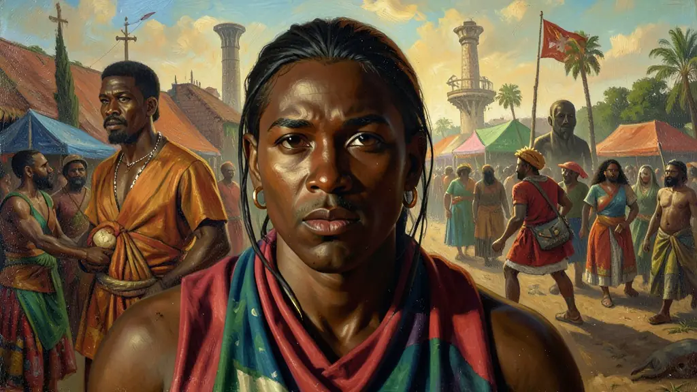
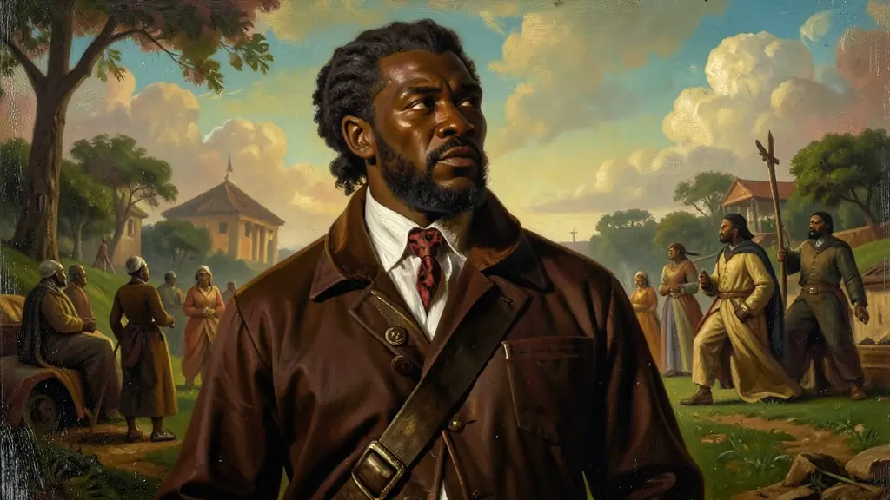
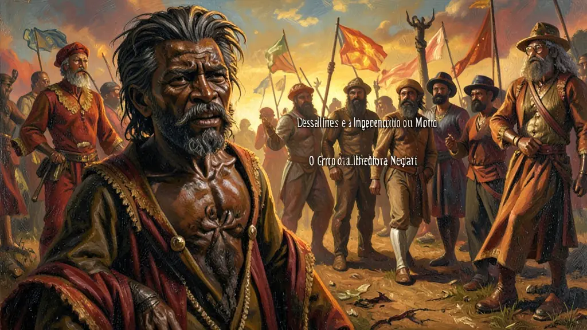

Capítulo 01
1. Saint-Domingue: A Máquina de Morder Carne Humana
Antes da revolta, o Haiti era a joia da coroa francesa. Produzia 40% do açúcar e 60% do café consumidos no mundo. Mas essa riqueza era sustentada por uma taxa de mortalidade de escravos tão alta que a França precisava importar 40 mil novos africanos por ano para repor os que morriam de exaustão e tortura. A ilha era um vulcão de ódio negro prestes a explodir contra um punhado de brancos luxuosos.

Capítulo 02
2. Toussaint Louverture: O Jacobino Negro
Toussaint era um ex-escravo alfabetizado que lia os clássicos do iluminismo. Ele organizou os rebeldes em um exército profissional de guerrilha. Ele jogou as potências europeias umas contra as outras, garantindo a abolição da escravidão em 1794. Toussaint acreditava que negros e brancos poderiam conviver em uma ilha próspera, mas seu sonho foi interrompido pela traição de Napoleão, que o prendeu e o enviou para morrer de frio em uma prisão nos Alpes franceses.

Capítulo 03
3. Dessalines e a Independência ou Morte
Com a prisão de Toussaint e a volta do racismo napoleônico, o general Dessalines não teve piedade. Ele liderou a guerra total contra os brancos sob o lema 'Vingar os nossos irmãos'. No dia 1º de janeiro de 1804, nasceu o Haiti. A bandeira foi criada rasgando a parte branca da bandeira da França (tricolor), simbolizando a expulsão definitiva dos brancos. O Haiti tornava-se o farol da liberdade para todos os negros das Américas.

Capítulo 04
4. Haitianismo no Brasil: O Pesadelo da Elite
D. Pedro I e os grandes fazendeiros de café do Rio de Janeiro não dormiam tranquilos. Eles olhavam para o Haiti e viam o que poderia acontecer no Brasil, onde a maioria da população também era negra e escravizada. O 'Haitianismo' foi usado para proibir cultos africanos, capoeira e qualquer reunião de negros, além de ser o principal argumento para manter a Monarquia forte como garantia de ordem social contra o 'caos' republicano haitiano.
Capítulo 05
5. A Conta Chega: O Preço do Reconhecimento
O mundo puniu o Haiti por ter vencido. As potências europeias e os EUA criaram um embargo comercial total. Para não ser invadido de novo, o Haiti foi obrigado a pagar 150 milhões de francos em ouro para a França como 'indenização' pelos escravos que se libertaram sozinho. O país passou 120 anos pagando essa dívida cruel, o que explica por que a nação mais revolucionária do mundo tornou-se uma das mais pobres hoje.
A Revolução do Haiti (1791-1804) foi a única revolta de escravos na história que resultou na fundação de um Estado independente e na abolição imediata da escravidão. Segundo C.L.R. James, os 'Jacobinos Negros' de Saint-Domingue levaram os ideais de liberdade da Revolução Francesa às suas últimas consequências, desafiando a hipocrisia das potências europeias que defendiam a igualdade apenas para brancos. Sob a liderança de Toussaint L’Ouverture, o exército de escravos derrotou as maiores potências militares da época.
O impacto da independência haitiana nas Américas foi sísmico, gerando o fenômeno do 'Haitianismo' — o pavor das elites brancas de que o exemplo da revolta negra se espalhasse pelo continente. No Brasil, esse medo pautou a repressão a quilombos e a manutenção do regime monárquico como garantia de ordem. O isolamento diplomático e a pesada indenização imposta pela França para reconhecer a independência condenaram o Haiti a um ciclo de pobreza econômica que contrastava com sua glória revolucionária.
O estudo da Revolução do Haiti é crucial para o Enem por desconstruir o mito da passividade escrava. Ela demonstra que o motor da descolonização americana não foi apenas o interesse das elites criollas, mas também a agência radical das populações negras. A análise dessa revolução permite compreender as contradições do Iluminismo e os limites da cidadania nas sociedades coloniais escravistas do século XIX.
Fonte: JAMES, C. L. R. Os Jacobinos Negros: Toussaint L'Ouverture e a Revolução de São Domingos. Rio de Janeiro: Boitempo, 2010.
Atividades interativas
Questões para fixar
A Revolução do Haiti (1791-1804) diferenciou-se de todos os outros processos de independência nas Américas por qual característica única?
O termo 'Haitianismo' no Brasil do século XIX referia-se a que fenômeno social e político?
Qual foi o principal fator que inspirou os negros escravizados a se rebelarem contra os plantadores brancos durante a Revolução do Haiti?
Quem foi o líder militar que comandou o exército de escravos durante a Revolução do Haiti e derrotou as tropas da França, Espanha e Inglaterra?
Qual foi o resultado da tentativa de Napoleão Bonaparte de restabelecer a escravidão na colônia de Saint-Domingue?